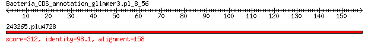

bitscore colors: <40, 40-50 , 50-80, 80-200, >200
 BLASTP 2.2.31+
Reference: Stephen F. Altschul, Thomas L. Madden, Alejandro A.
Schaffer, Jinghui Zhang, Zheng Zhang, Webb Miller, and David J.
Lipman (1997), "Gapped BLAST and PSI-BLAST: a new generation of
protein database search programs", Nucleic Acids Res. 25:3389-3402.
Reference for composition-based statistics: Alejandro A. Schaffer,
L. Aravind, Thomas L. Madden, Sergei Shavirin, John L. Spouge, Yuri
I. Wolf, Eugene V. Koonin, and Stephen F. Altschul (2001),
"Improving the accuracy of PSI-BLAST protein database searches with
composition-based statistics and other refinements", Nucleic Acids
Res. 29:2994-3005.
Database: eggnogv4.proteins.all.fa
14,875,530 sequences; 5,112,597,290 total letters
Query= Bacteria_CDS_annotation_glimmer3.pl_8_56
Length=158
Score E
Sequences producing significant alignments: (Bits) Value
243265.plu4728 312 5e-107
> 243265.plu4728
Length=158
Score = 312 bits (800), Expect = 5e-107, Method: Compositional matrix adjust.
Identities = 155/158 (98%), Positives = 158/158 (100%), Gaps = 0/158 (0%)
Query 1 MKGDKKMIAHLNKLLGNELVAINQYFLHARMFKNWGLTRLNDKEYHESIDEMKHADRYIE 60
MKGDKKMIAHLNKLLGNELVAINQYFLHARMFKNWGLTRLNDKEYHESIDEMKHADRYIE
Sbjct 1 MKGDKKMIAHLNKLLGNELVAINQYFLHARMFKNWGLTRLNDKEYHESIDEMKHADRYIE 60
Query 61 RILFLEGIPNLQDLGKLNIGEDIEEMLKSDLQLELQGARDLKEAIAYADSIHDYVSRDLM 120
RILFLEGIPNLQDLGKLNIGEDIEEMLKSDLQLELQGA+DLKEAIAYADSIHDYVSRDLM
Sbjct 61 RILFLEGIPNLQDLGKLNIGEDIEEMLKSDLQLELQGAKDLKEAIAYADSIHDYVSRDLM 120
Query 121 IDILDEEEEHIDWLETQFELIERMGIQNYTQAQILEGE 158
IDILDEEE+HIDWLETQFELIERMGIQNYTQ+QILEGE
Sbjct 121 IDILDEEEKHIDWLETQFELIERMGIQNYTQSQILEGE 158
Lambda K H a alpha
0.318 0.138 0.392 0.792 4.96
Gapped
Lambda K H a alpha sigma
0.267 0.0410 0.140 1.90 42.6 43.6
Effective search space used: 126446280220